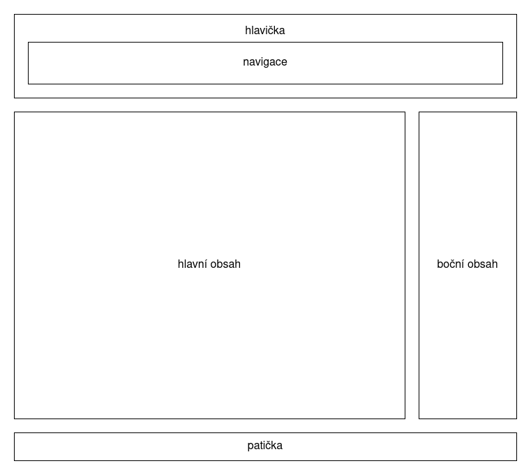

Text webové stránky můžeme strukturovat do jednotlivých odstavců. Uvnitř odstavců (a obecně elementů) nezáleží na zalamování řádků nebo počtu mezer mezi slovy.
Pokud nutně potřebujeme zalomit text uvnitř odstavce,
můžeme to udělat elementem br.
Pokud potřebujeme část textu zdůraznit, použijeme element em.
Tato věta je tedy důležitá. Pokud chceme vyjádřit ještě vyšší stupeň zdůraznění, slouží k tomu element
strong. Toto upozornění je tedy ještě důležitější než to předchozí.
Nákupní seznam:
Lední hokej na Zimních olympijských hrách 1998 – turnaj muži:
Víceúrovňové seznamy:
Možnost odkazovat se z jedné stránky na jinou je jednou z nejzásadnějších myšlenek webu a rovněž i historicky jedním z důvodů vzniku jeho popularity. Odkazy na jiné stránky na webu (ale též třeba na obrázky apod.) jsou dvojího druhu:
Cílem odkazu nemusí ovšem nutně být jiná webová stránka. Například je možné vytvořit odkaz na e-mailovou adresu: kontaktujte nás.
Elementu img, sloužícímu k vložení obrázku, povinně nastavujeme kromě atributu
src rovněž i atribut alt. Jeho obsah je použit především čtečkami asistujícími
uživatelům se zrakovým postižením, případně i běžnými prohlížeči například v situaci, kdy samotný obrázek není
dostupný.
Logo ReactGirls: .
Libovolnému elementu je možné přiřadit náš vlastní identifikátor, a to hodnotou atributu id. Přes
identifikátor je potom možné s elementem pohodlně pracovat v CSS (a JavaScriptu). Je ale nezbytné zajistit, aby
každý identifikátor byl unikátní napříč všemi elementy celého dokumentu. V praxi se identifikátory pro stylování
příliš nepoužívají, přednost se dává třídám (nám se ale v následujících ukázkách budou hodit).
Identifikátory mají ještě jedno použití, nesouvisející s CSS. Můžeme se totiž odkázat na konkrétní část stránky začínající právě elementem s nějakým identifikátorem.
blue#dc143c (crimson, též možno zapsat jako rgb(220, 20, 60))
hsl(0, 100%, 50%) (red)120%.1.2rem.32px.font-weight: boldfont-style: italicfont-weight: bold; font-style: italicfont-family: "Tex Gyre Heros", sans-seriffont-family: "Tex Gyre Schola", seriffont-family: "Tex Gyre Cursor", monospaceTo bylo tenkrát, když pejsek a kočička ještě spolu hospodařili; měli u lesa svůj malý domeček a tam spolu bydleli a chtěli všechno dělat tak, jak to dělají velcí lidé. Ale oni to vždycky tak neuměli, protože mají malé a nešikovné tlapičky a na těch tlapičkách nemají prsty, jako má člověk, jenom takové malé polštářky a na nich drápky. A tak nemohli dělat všechno tak, jak to dělají lidé, a do školy nechodili, protože škola není pro zvířátka, ba ne, to ne! Co myslíte? Ta je jen pro děti!
To bylo tenkrát, když pejsek a kočička ještě spolu hospodařili; měli u lesa svůj malý domeček a tam spolu bydleli a chtěli všechno dělat tak, jak to dělají velcí lidé. Ale oni to vždycky tak neuměli, protože mají malé a nešikovné tlapičky a na těch tlapičkách nemají prsty, jako má člověk, jenom takové malé polštářky a na nich drápky. A tak nemohli dělat všechno tak, jak to dělají lidé, a do školy nechodili, protože škola není pro zvířátka, ba ne, to ne! Co myslíte? Ta je jen pro děti!
To bylo tenkrát, když pejsek a kočička ještě spolu hospodařili; měli u lesa svůj malý domeček a tam spolu bydleli a chtěli všechno dělat tak, jak to dělají velcí lidé. Ale oni to vždycky tak neuměli, protože mají malé a nešikovné tlapičky a na těch tlapičkách nemají prsty, jako má člověk, jenom takové malé polštářky a na nich drápky. A tak nemohli dělat všechno tak, jak to dělají lidé, a do školy nechodili, protože škola není pro zvířátka, ba ne, to ne! Co myslíte? Ta je jen pro děti!
To bylo tenkrát, když pejsek a kočička ještě spolu hospodařili; měli u lesa svůj malý domeček a tam spolu bydleli a chtěli všechno dělat tak, jak to dělají velcí lidé. Ale oni to vždycky tak neuměli, protože mají malé a nešikovné tlapičky a na těch tlapičkách nemají prsty, jako má člověk, jenom takové malé polštářky a na nich drápky. A tak nemohli dělat všechno tak, jak to dělají lidé, a do školy nechodili, protože škola není pro zvířátka, ba ne, to ne! Co myslíte? Ta je jen pro děti!
div a spanV HTML existují dva elementy, které cíleně nemají přiřazenou vůbec žádnou konkrétní sémantiku. To se nejčastěji hodí právě v kombinaci s CSS: chceme-li konkrétní část obsahu nějak specificky nastylovat, můžeme ji obalit jedním z těchto elementů (obvykle ještě v kombinaci s použitím tříd).
Element div je tzv. blokový (block) element, a tedy vymezuje nějaký obdélník, uvnitř něhož se nachází
jeho obsah. Pro jednoduchost si jej můžeme představit jako něco jako odstavec, ovšem bez toho konkrétního významu,
že se jedná o odstavec textu. Hlavní rozdíl je v tom, že uvnitř odstavce nemá smysl mít jiný odstavec, zatímco
vnořování divů je naopak velmi časté.
Element span je tzv. řádkový (inline) element, a tedy je součástí textového obsahu nějakého jiného
blokového elementu (např. odstavce). S jeho pomocí můžeme přiřadit specifický styl konkrétní části textu.
Elementy můžeme kategorizovat do tzv. tříd, typicky podle nějaké vlastnosti (a to i napříč různými druhy
elementů). Můžeme například definovat třídu dulezite, v CSS této třídě definovat, jak chceme důležitost
reprezentovat, a pak tuto třídu přiřadit libovolnému elementu (např. celému nadpisu, celému odstavci, části
odstavce s využitím spanu apod.).
Odstavec plný důležitého textu.
Odstavec obsahující pouze jedno důležité slovo.
To bylo tenkrát, když pejsek a kočička ještě spolu hospodařili; měli u lesa svůj malý domeček a tam spolu bydleli a chtěli všechno dělat tak, jak to dělají velcí lidé. Ale oni to vždycky tak neuměli, protože mají malé a nešikovné tlapičky a na těch tlapičkách nemají prsty, jako má člověk, jenom takové malé polštářky a na nich drápky. A tak nemohli dělat všechno tak, jak to dělají lidé, a do školy nechodili, protože škola není pro zvířátka, ba ne, to ne! Co myslíte? Ta je jen pro děti!
To bylo tenkrát, když pejsek a kočička ještě spolu hospodařili; měli u lesa svůj malý domeček a tam spolu bydleli a chtěli všechno dělat tak, jak to dělají velcí lidé. Ale oni to vždycky tak neuměli, protože mají malé a nešikovné tlapičky a na těch tlapičkách nemají prsty, jako má člověk, jenom takové malé polštářky a na nich drápky. A tak nemohli dělat všechno tak, jak to dělají lidé, a do školy nechodili, protože škola není pro zvířátka, ba ne, to ne! Co myslíte? Ta je jen pro děti!
To bylo tenkrát, když pejsek a kočička ještě spolu hospodařili; měli u lesa svůj malý domeček a tam spolu bydleli a chtěli všechno dělat tak, jak to dělají velcí lidé. Ale oni to vždycky tak neuměli, protože mají malé a nešikovné tlapičky a na těch tlapičkách nemají prsty, jako má člověk, jenom takové malé polštářky a na nich drápky. A tak nemohli dělat všechno tak, jak to dělají lidé, a do školy nechodili, protože škola není pro zvířátka, ba ne, to ne! Co myslíte? Ta je jen pro děti!
Logo ReactGirls v různých velikostech: .
Mnoho stránek je složeno ze struktury, která by se dala zjednodušeně zachytit následujícím obrázkem.

Tu bychom mohli s dosavadními znalostmi HTML zachytit přibližně následovně (přestože ještě nemáme znalost stylování pro dosažení odpovídajícího zobrazení).
<div class="header"> … <div class="navigation"> … </div> </div> <div class="main-content"> <div class="article"> <h2>Článek 1</h2> <p>Text prvního článku.</p> </div> <div class="article"> <h2>Článek 2</h2> <p>Text druhého článku.</p> </div> </div> <div class="side-content"> … </div> <div class="footer"> … </div>
HTML nám v tomto směru ale nabízí elementy s konkrétním významem odpovídajícím právě takovýmto potřebám:
main, article, section, header, footer,
nav nebo aside. S jejich použitím bychom totéž mohli zachytit například následovně.
<header> … <nav> … </nav> </header> <main> <article> <h2>Článek 1</h2> <p>Text prvního článku.</p> </article> <article> <h2>Článek 2</h2> <p>Text druhého článku.</p> </article> </main> <aside> … </aside> <footer> … </footer>
| Hráč | Body | Góly | Asistence |
|---|---|---|---|
| Wayne Gretzky | 2857 | 894 | 1963 |
| Jaromír Jágr | 1921 | 766 | 1155 |
| Mark Messier | 1887 | 694 | 1193 |
| … | |||
| Sidney Crosby | 1596 | 592 | 1004 |
Formuláře jsou tvořeny elementem form a jeho obsahem (formulářovými prvky). Nejužitečnější vlastností
formulářů je, že údaje uživatelem vyplněné je možné odeslat na server. Adresu, na kterou mají být data odeslána,
určuje atribut action. Mechanismus tohoto odeslání a následného zpracování je ovšem už nad rámec
tohoto kurzu (a HTML vůbec).
Formulářové prvky obvykle mají atribut name, jehož hodnota slouží jako klíč, pod kterým budou data
konkrétního prvku odeslána. Jedná se tedy o jakési pojmenování daného prvku. Formulářové prvky mohou ovšem stejně
jako jiné elementy obsahovat i atribut id, jenž rovněž slouží k pojmenování: tentokrát však spíše z
pohledu navázání na CSS nebo z hlediska použití elementu label.